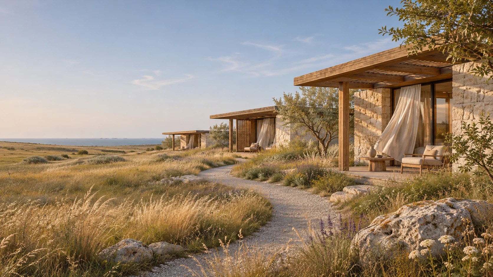
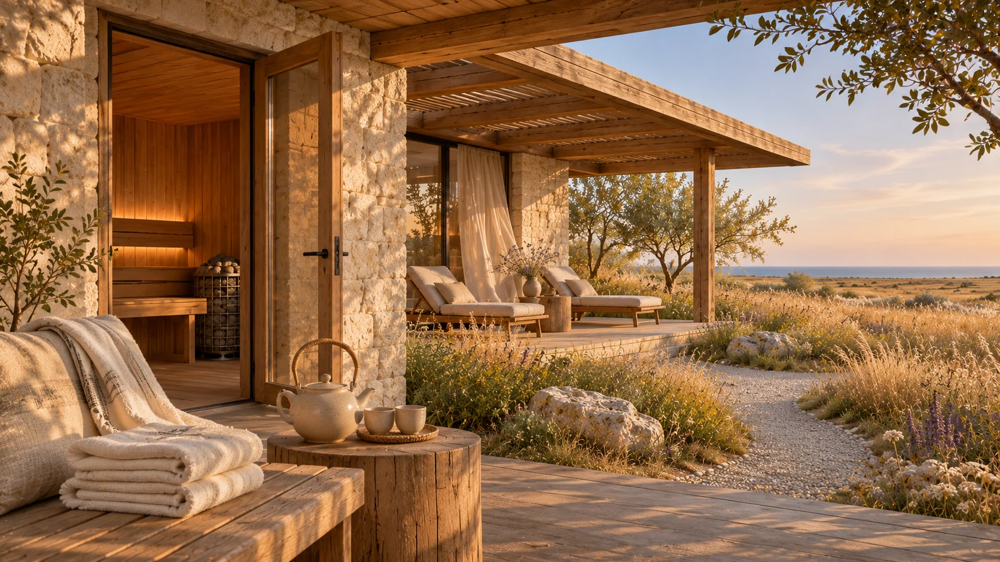
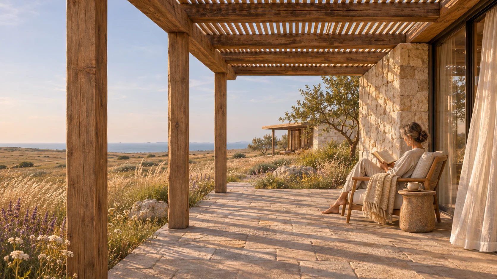

Визуализация концепции
Визуализация концепцииДом и террасаПроснуться.
Проснуться.
И никуда
не спешить.
Мягкий свет, воздух и свой уголок тишины. В концепции домов есть место для неспешного утра и долгого отдыха.

Восточный Крым · Азовское море
Проект центра отдыха и восстановления.
Место, где есть время на себя и близких.
Идея Элиоса
Уехать к морю на несколько дней. Выспаться. Пройтись по берегу. Провести вечер с теми, кто вам дорог.
Таким мы задумываем «Элиос»: с личным пространством для отдыха и местами, где приятно встречаться. Здесь можно быть вместе и находить время для себя.
Жизнь в центре
Личный дом, общая терраса,
тепло бани. Пространства будущего
центра складываются в один ритм.
Визуализация концепцииМягкий свет, воздух и свой уголок тишины. В концепции домов есть место для неспешного утра и долгого отдыха.
 Визуализация концепции
Визуализация концепцииЗавтрак на открытом воздухе, ужин с близкими, новые знакомства. Общая терраса задумана как место притяжения гостей.

Визуализация концепцииОтдых, которому можно отдать всё внимание. Баня и пространство после пара — одна из идей будущей инфраструктуры центра.
Место Элиоса
Побережье Азовского моря в Восточном Крыму.
Открытый ландшафт, берег и много неба. Отсюда начинается образ «Элиоса»: спокойная архитектура, естественные материалы и внимание к окружающему пространству.

В своём темпе
Общение, когда хочется.
Тишина, когда она нужна.
Стать частью проекта
Мы начинаем с цельного опыта гостя.
Вокруг него строятся возможности
для партнёров и предпринимателей.
Партнёрство в развитии
Участие в создании первой очереди, общей инфраструктуры и запуске проекта.
Размер вложений и условия партнёрства обсуждаются индивидуально.
Дом для личного отдыха
Для тех, кто рассматривает дом у моря для себя и близких, с доступом к жизни и сервису центра.
Формат приобретения, права на объект и модель управления разрабатываются. Продажи пока не открыты.
Инфраструктура и сервис
Кафе, баня, спа и другие услуги для гостей. Рассматриваем идеи предпринимателей, которым близка концепция центра.
Условия создания и работы каждого объекта определяются отдельно.
Основа проекта
«Элиос» находится на стадии разработки концепции центра. Открыт диалог о продукте, архитектуре и форматах участия.
Перед знакомством
Центр находится на стадии разработки. Бронирование отдыха пока не открыто. Сейчас можно познакомиться с концепцией, рассказать о своём интересе и обсудить участие в проекте.
Снимки побережья взяты из исходных материалов «Элиоса». Дома, кафе, баня и террасы — визуализации идеи будущего центра. Они помогают обсудить атмосферу и архитектурный характер; состав объектов и их размещение ещё определяются.
Такой интерес предусмотрен в концепции. Формат приобретения, статус объекта, права покупателя и условия управления требуют отдельной проработки. Готового предложения о продаже дома или земельного участка сейчас нет.
С вашей цели и возможной роли: развитие центра, дом для отдыха или собственный объект инфраструктуры. На этой основе обсуждаются формат, этапы и условия. Связаться можно с Александром Благовым по номеру +7 911 769 05 35.
Начнём со знакомства
Расскажите, что вам близко в этом проекте.
Обсудим возможности и следующий шаг.
Контакт по проекту
Александр Благов
+7 911 769 05 35Посмотреть презентацию (откроется в новой вкладке)